|
|
|
|
3.6. Подготовка рисунков в программе Adobe Photoshop
А сейчас давайте рассмотрим некоторые приемы подготовки изображений в графическом редакторе Adobe Photoshop. Конечно, подробно описать эту программу в небольшом разделе затруднительно, но целью данного раздела и не является подробное описание — мы рассмотрим лишь некоторые приемы, наиболее часто встречающиеся при подготовке изображений для веб-страниц.
Основное окно программы представлено на рис. 3.21. Обратите внимание на несколько вспомогательных панелей, расположенных в рабочей области. Самая главная из них — Панель инструментов. Инструменты программы
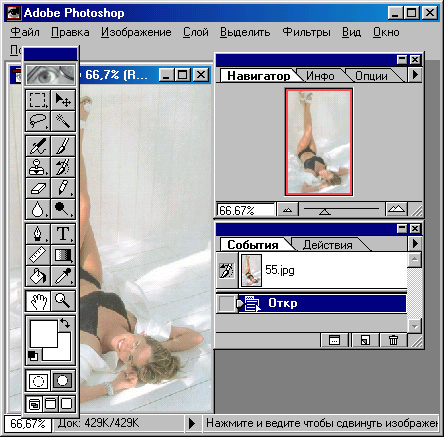
Рис. 3.8. Основное окно программы Adobe Photoshop
Пример 1. Создание градиентного фона
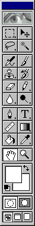
Рис, 3.9. Инструменты, программы Adobe Photoshop
В программе Adobe Photoshop выберем из меню Файл (File) пункт Новый (New). Появится диалоговое окно создания нового файла (рис. 3.10). Внем нас больше всего интересует задание размера будущего изображения, его ширины и высоты. В раскрывающихся списках выберите единицы измерения — пикселы, так как нас интересует именно экранный размер изображения.
По умолчанию на веб-страницах фоновый рисунок повторяется по вертикали и горизонтали. Поскольку наш градиентный перелив будет горизонтальным, мы можем указать любой вертикальный размер: чем меньше — тем лучше. Меньше будет размер рисунка — фон будет быстрее загружаться из Интернета. Возьмем, например, 2 пиксела. Размер по горизонтали должен быть таким, чтобы занять всю ширину экрана, иначе на веб-странице рисунок повторится по горизонтали, что не очень красиво.
“Вся ширина экрана” — понятие растяжимое, однако редко кто смотрит веб-страницы в разрешении, большем, чем 1024х768, поэтому для большинства случаев размера 1024 точки по горизонтали будет достаточно.
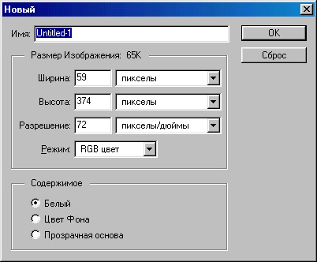
Рис. 3.10. Создание нового изображения в программе Photoshop
Итак, определяем ширину рисунка: 1024 и высоту: 2 пиксела. Остальные параметры нам сейчас не важны. После щелчка на кнопке ОК откроется окно рисунка. Чтобы лучше видеть результаты своих действий, желательно увеличить масштаб изображения, нажав несколько раз комбинацию клавиш CTRL++.
Теперь надо выбрать цвета для создаваемого градиента, например, как в нашем примере: зеленый и светло-зеленый. Для выбора первого цвета дважды щелкните на значке Основной цвет (Foreground Color) — откроется окно выбора цвета (Color Picker), в котором можно визуально выбрать необходимый цвет. Для выбора второго (конечного) цвета градиента дважды щелкните на значке Цвет фона (Background Color).
Выбрав цвета, можно определить характер градиента. Для этого выберите инструмент Градиент (Linear Gradient Tool) на Панели инст- рументов. Далее, удерживая в нажатом положении клавишу SHIFT, проведите линию от левого края рисунка до приблизительно 200-й слева точки 1 . Когда кнопка мыши будет отпущена, вы увидите градиентную заливку. Осталось только сохранить рисунок.
Однако, выбрав пункт Сохранить (Save) из меню файл (File), вы, скорее всего, увидите, что среди предлагаемых форматов, в которых можно сохранить изображение, есть только формат PSD (собственный формат программы Adobe Photoshop). Это происходит потому, что наше изображение содержит более одного слоя. Выберите из меню Слой (Layer) команду Склеить все слои (Flatten Image), после чего вновь попытайтесь сохранить файл. Теперь в окне сохранения вам будет предложено множество форматов, из которых следует выбрать формат JPEG. Далее требуется выбрать качество сжатия по десятибалльной шкале. В данном случае для приемлемого результата достаточно выбрать значение 3 или 4.
И еще несколько замечаний по поводу первого примера. Во-первых, избран ный нами размер 1024 точки по горизонтали явно избыточен, ведь нари сованный нами градиентный перелив заканчивается уже на 200-й точке. Если вы используете каскадные таблицы стилей (CSS) на веб-странице, у вас будет возможность НЕ повторять фоновый рисунок по горизонтали. Тогда можно спокойно создать рисунок шириной 200 точек и запомнить конечный цвет градиента (разумеется, не на глаз, а в цифровом выра жении — в окне выбора цвета отображаются значения R, G, В, то есть крас ной, зеленой и синей составляющих). А затем помимо фонового рисунка определить на веб-странице цвет фона, совпадающий с конечным цветом градиента. Далее можно таким же способом назначить вертикальный градиент, однако делать это следует только если используются каскадные таблицы стилей CSS, поскольку лишь в этом случае можно не повторять фоновый рисунок по вертикали.
И, наконец, можно создать многократный градиентный перелив. Для этого, выбрав инструмент Градиент (Linear Gradient Tool), выберите в служебной палитре Навигатор/Инфо/Опции (Navigator/Info/ Options) вкладку Опции линейного градиента (Linear Gradient Options) и нажмите кнопку Правка (Edit)— откроется диалоговое окно Редактор градиента I (Gradient Editor), представленное на рис. 3.11. Здесь можно по желанию добавить в любое место градиента любой цвет, а также цвет пере- днего плана и цвет фона, пользуясь, соответственно, одним из трех значков настройки параметров градиента. Все изменения немедленно отображаются на экране. Таким образом, наш градиент может переливаться не двумя, а тремя, четырьмя и более цветами. Когда найдете нужное сочетание цветов, нажмите кнопку ОК и затем, как и ранее, проведите линию инструментом Градиент (Linear Gradient Tool).
Пример 2. Подготовка круглой фотографии
Как вы помните, на рис. 3.6 была изображена веб-страница с круглой фото графией. Посмотрим, как же такую фотографию подготовить, если у нас есть обычная фотография.
На панели инструментов выберите инструмент простого выделения (Rectangular Marquee Tool). Нажмите и удерживайте на его значке левую кнопку мыши, пока не появится небольшое меню из не- скольких подобных значков. Эти инструменты называются альтернативными. Выберите из набора альтернативных инструментов инструмент круглого или овального выделения (Elliptical Marquee Tool). лите на рисунке нужную часть, а затем нажмите комбинацию клавиш SHIFT+CTRL+1 или выберите в меню Выделить (Select) пункт
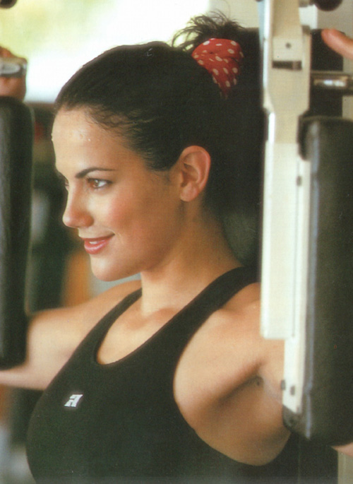
Рис. 3.11. Исходная
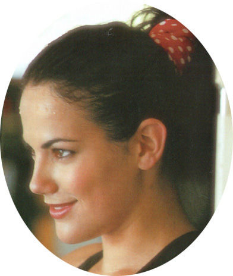
Рис. 3.12. Очистка
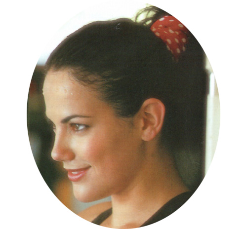
Рис. 3.13. фотография ненужных областей.
Кадрированньй снимок
Обратно (Inverse). При этом на рисунке будет выделено все, кроме обведен ной области. Затем в меню Правка (Edit) выберите пункт Очистить (Clear). Результат показан на рис. 3.12.
Чтобы удалить ненужные пустые области изображения, снова откройте набор альтернативных инструментов выделения и выберите инструмент простого прямоугольного выделения (Rectangular Marquee Tool). Обведите круглую или овальную фотографию и дайте команду Изображение > Обрезание (Image > Crop). Результат показан на рис. 3.13.
Теперь осталось сохранить эту фотографию так, чтобы цвет фона вокруг нее превратился в прозрачный. Удобнее и нагляднее всего это сделать следующим образом. Дайте команду Изображение > Режим > Индекс цвета (Images Mode > Indexed Color) В открывшемся диалоговом окне установите необходимое количество цветов. В случае фотографии обычно желательно установить адаптированную (Adaptive) палитру из 256 цветов. Если помните, это максимальное количество цветов для формата GIF. Нажмите кнопку ОК для преобразования цветового режима и затем дайте команду Файл > Экспорт > GIF89a (File > Export > GIF89a Export). Появится диалоговое окно Экспорт опции (GIF 89a Export Options), представленное на рис. 3.14. Возьмите в нем инструмент Пипетка (Eyedropper Tool) и щелкните им на фоне изображения. Оно окрасится в серый цвет, который условно принят для воспроизведения прозрачного цвета. При необходимости можно с помощью пипетки еще некоторые цвета преобразовать в цвет, назначенный прозрачным. Затем нажмите на кнопку ОК и все. Остается только ввести имя файла.
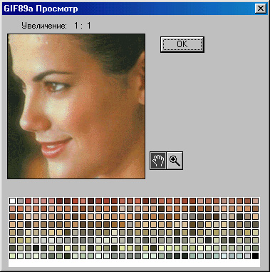
Рис. 3.14. Выбор цвета, который будет отображаться как прозрачный
Пример 3. Подготовка рисунков произвольной формы
В предыдущем примере мы продемонстрировали выделение овальной области. А что делать, если хочется, чтобы фотография или рисунок на веб-странице были произвольной формы, например, повторяли контур лица? Операция обрезки изображения по сложному контуру называется обтравкой.
Можно сделать и это, однако следует заметить, что в качестве исходного материала при этом лучше выбирать такой, где контуры объектов визуально не сливаются с фоном, иначе работа будет очень кропотливая. Фотография из предыдущего примера для этого плохо подходит, а вот такая, как на рис. 3.15, — вполне.
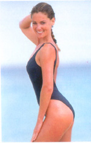 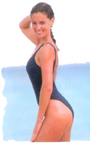
Рис. 3.15. Подготовка изображения произвольной формы
Для выделения объектов произвольной формы в программе Adobe Photoshop имеются такие инструменты, как Лассо (Lasso Tool) и Волшебная палочка (Magic Wand Tool). С помощью инструмента Лассо (Lasso Tool) можно вручную провести контур выделения произвольной формы, что в нашем случае возможно, хотя и трудоемко. С помо- щью Волшебной палочки (Magic Wand Tool) можно мгновенно выделить объект по контуру, но только при условии, что контур заполнен одним цветом или близкими цветами. Если же контур размыт (как бывает на большинстве реальных фотографий), то иногда программа определяет его не так, как человеческий глаз. В любом случае можно добавить к выделенной области еще кусочек, если щелкнуть волшебной палочкой, удерживая клавишу SHIFT.
В нашем примере можно, несколько раз щелкнув волшебной палочкой в левой верхней части фотографии, выбрать все, что находится слева и сверху от лица, и затем дать команду Правка > Очистить (Edit > Clear). На рис. 3.29 можно заметить, что все-таки в очищенной области остался неко торый “мусор”. Его легко почистить, используя инструмент Ластик (Eraser). Увеличьте масштаб изображения, нажав несколько раз комбина цию клавиш CTRL++. Чтобы “стереть” ненужные детали, доста точно поводить по ним инструментом при нажатой кнопке мыши, только не забудьте выбрать подходящий размер ластика. Для этого в служебной палитре Цвета/Каталог/Кисти (Colors/Swatches/Brushes) выберите вкладку Кисти (Brushes) и в ней подберите подходящий размер инструмента. Обычно для стирания мелкого мусора лучше всего подходит жесткий инструмент диаметром пять пикселов (по умолчанию третий слева в верхнем ряду).
Главное при удалении мусора — не задевать контур изображения. Для верности можно предварительно выделить всю область с мусором любым из инструментов выделения. Если на рисунке присутствует выделенная область, то все действия, в том числе и стирание, производятся только внутри нее. Итак, после стирания у нас должно получиться изображение, подобное представленному на рис. 3.15. После этого остается только сохранить наш файл, назначив цвету фона свойство прозрачности, как в предыдущем примере. Однако, пользуясь случаем, рассмотрим еще один момент. Перед сохранением изображения неплохо бы проверить его размер в пикселах. Для этого дайте команду Изображение > Размер изображения (Image > Image Size). Она откроет диалоговое окно Размер изображения (Image Size), представлен ное на рис. 3.16. В нашем примере исходный размер изображения был равен 1437х958 пикселов, что явно превосходит возможности большин ства экранов. На веб-странице такая большая фотография будет смотреться плохо. Поэтому перед сохранением неплохо бы уменьшить ее размер. Это можно сделать в том же диалоговом окне, поменяв значения ширины и/или высоты. Предварительно надо установить флажок Ресэмплировать Изображение (Resample Image) и желательно проследить, чтобы при этом был установлен флажок Соблюдать пропорции (Constrain Proportions). Пер вый флажок необходим, чтобы изображение перемасштабировалось не визуально, а физически — с удалением (при уменьшении) или вставкой (при увеличении) промежуточных точек, а второй — чтобы размеры сто рон изменялись пропорционально. При физическом изменении размеров рисунка следует выбрать тип интерполяции — от него зависит алгоритм выбора параметров промежуточных точек. Если изображение фотографи ческое, как в нашем случае, используют Бикубическую (Bicubic) интерполя цию . Если изображение штриховое или растровое (чертеж, снимок экранного окна и т. п.), целесообразно использовать интерполяцию По ближайшему соседнему (Nearest Neighbor).
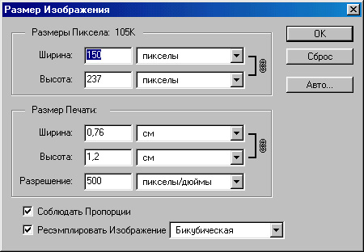
Рис. 3.16. Изменение размера изображения в программе Photoshop
Пример 4. Совмещение изображений
С помощью программы Adobe Photoshop можно делать и более интересные манипуляции. Рассмотрим такой пример. Допустим, у нас имеется фотография, изображенная на рис. 3.17. В то же помещение мы желаем поместить яблоко с фотографии на рис. 3.17, то есть сделать простейший монтаж.
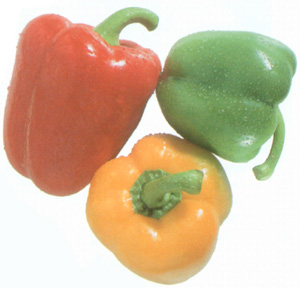
Рис. 3.17. Первая исходная фотография для монтажа
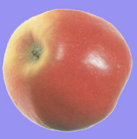
Рис. 3.18. Вторая исходная фотография для монтажа
Сначала с помощью инструмента Волшебная палочка
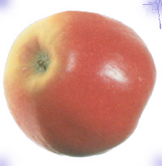
Рис. 3.18. Обтравка изображения по контуру
Итак, выберем из меню Правка (Edit) пункт Трансформ (Transform) и далее дадим команду Перевернуть по горизонтали (Flip Horizontal). В результате получится то, что изображено на рис (ниже). Конечно, делать зеркальные изображения людей, строго говоря, не совсем корректно, поскольку доказано, что зеркальное изображение воспринимается совсем не так, как обычное. Однако для данного случая его можно считать приемлемым. Плохое освещение скрадывает отличия зеркального образа, но для композиции он хорошо подходит из-за наклона вправо.
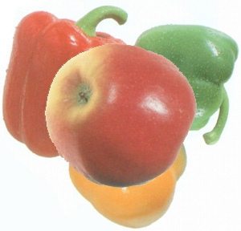
Рис. 3.19. Двухслойное изображение в программе Photoshop
— А дело в том, что здесь мы подошли к одному из самых замечательных свойств программы Adobe Photoshop — умению работать со слоями. Любое изображение может состоять из нескольких слоев, которые можно произвольно располагать один над другим. Если в изображении присутствуют несколько слоев, то все манипуляции происходят только с тем слоем, который выделен на служебной палитре Слои (Layers). В нашем случае в момент вставки изображения из буфера обмена для него автоматически был создан новый слой. Таким образом, сейчас в нашем рисунке два слоя (рис. 3.21). Тот слой, который выделен, считается текущим. Поэтому все, что мы делаем, сейчас относится только к нему. Кстати, обратите внимание на то, что один из слоев на рис. 3.21 называется Фон (Background). Такой слой обязательно присутствует в каждом многослойном рисунке, и при этом он является самым нижним.
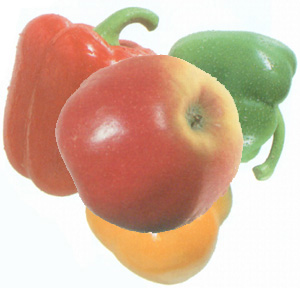
Рис. 3.20. Эффект зеркального отражения одного из слоев
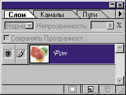
Рис. 3.21. Список слоев в программе Photoshop
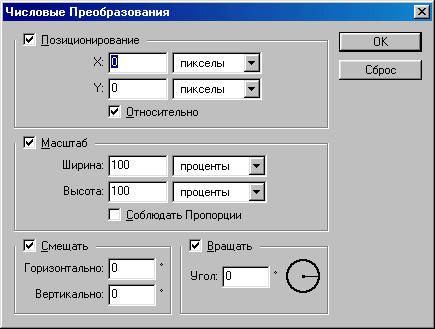
Рис. 3.22. Числовые преобразования в программе Photoshop
Итак, попробуем разместить наше вставленное изображение. Для того чтобы его уменьшить, дайте команду Правка > Трансформ > Число (Edit > Transform > Numeric). Она открывает диалоговое окно (рис. 3.22), в котором можно задать параметры преобразования текущего слоя. В нашем случае следует оставить включенным только флажок Масштаб (Scale). Установите также флажок Соблюдать пропорции (Constrain Proportions) и задайте ширину объекта 70% (при этом высота также автоматически изменится). Затем возьмите инструмент Двигатель (Move Tool) и с его помощью передвиньте изображение девушки, как показано на рис. 3.23.
Получается не совсем то, что надо. Яблоко находится как бы дальше от нас, чем остальное, однако ее изображение перекрывает их! Что делать? Можно, конечно, выделить из фона изображение, скопировать его на новый слой и поместить этот слой впереди всех остальных. Кстати, для упражнения можете проделать такую работу. Но мы для простоты просто поместим изображение девушки чуть левее, чтобы оно не перекрывало другие близкие к наблюдателю объекты.
Однако при этом это изображение будет находиться чуть ближе к наблюдателю, стало быть, его надо снова увеличить. Чтобы не терять качество, лучше не увеличивать уменьшенное изображение, а вернуться на несколько шагов назад и уменьшить его в меньшей степени. Чтобы вернуть назад откройте
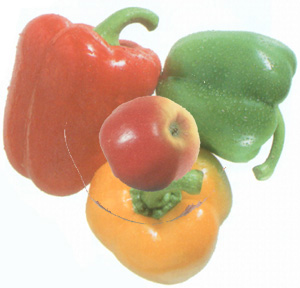
Рис. 3.23. Перемещение слоя
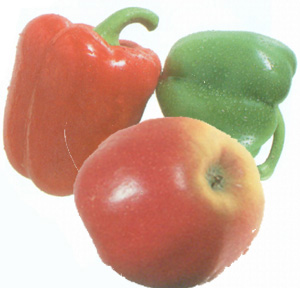
Рис. 3.24. Изменение масштаба
всех выполненных операций. Выделив любую из них, можно вернуться к тому состоянию, в которой она выполнялась.
Вернувшись к моменту уменьшения изображения, снова дадим команду Правка > Трансформ > Число (Edit > Transform > Numeric) и зададим масштаб изображения, равным 85% (рис. 3.24). Теперь передвинем изображение яблока (рис. 3.25). Что ж, теперь общая картина стала гораздо естественнее. Но все же той тени, которую мы “взяли с собой”.
Чтобы было легче выделить “старую” тень, щелкните на значке глаза слева от слоя Фон. При этом фон исчезнет с экрана. Увеличьте изображение девушки с помощью комбинации CTRL++. Теперь нужно выбрать подходящий инструмент для выделения. Если вы хорошо и гибко умеете водить мышью, можете выбрать инструмент Лассо (Lasso), но, на наш взгляд, здесь удобнее воспользоваться инструментом многоугольного выделения (Poligonal Lasso Tool). Этот инструмент альтернативен инструменту Лассо (Lasso). Его выбирают, как и все альтернативные инструменты, наведя указатель мыши на текущий инструмент, нажав кнопку и дождавшись открытия меню альтернативных инструментов.
Щелкая по вершинам многоугольника, выделите “старую” тень и удалите ее командой Правка > Очистить (Edit > Clear). Теперь опять щелкните слева от слоя Фон в служебной палитре Слои (Layers), чтобы вернуть на экран фоновое изображение (рис. 3.25).
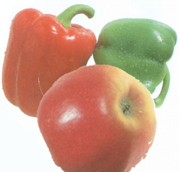
Рис. 3.25. Перемещение слоя за рамки кадра
Рис. 3.26. Удаление “лишней” тени из слоя
Теперь осталось собственно наложить тень. Из меню Слой (Layer) выберите пункт Эффекты (Effects) и далее команду Наложить тень (Drop Shadow). Откроется диалоговое окно настройки эффектов (рис. 3.27). Обратите внимание на то, что если отмечен флажком пункт Применить (Apply), то, настраивая эффект, можно непосредственно наблюдать результат его действия на изображение.
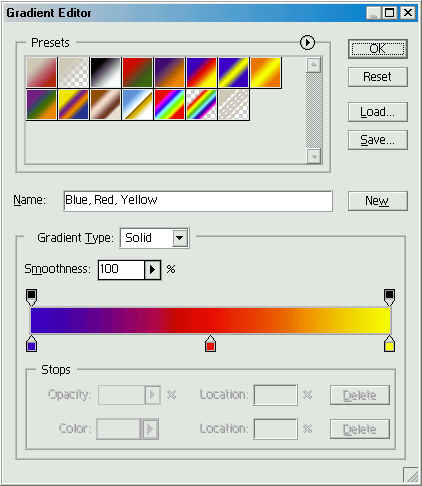
Градиентная заливка
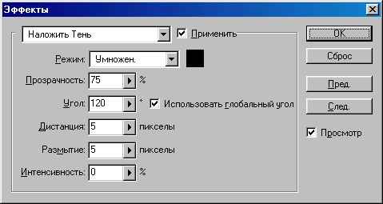
Рис. 3.27. Окно настройки эффектов применительно к слою изображения
В соответствии с освещенностью на фоновой фотографии выберите режим Мягкий свет (Soft Light). При этом следует немного уменьшить заданную прозрачность, например до 67%. Опытным путем подберите угол отбра сывания тени (Angle) — в нашем случае — 146%, а также “дистанцию” (Distance) (удаленность от основного изображения, в нашем случае — 13 пикселов) и глубину размытия (здесь — 11 пикселов). На рис. 3.28 пока зано, что должно получиться в результате.
Наконец, обрежем правый и нижний края изображения, чтобы создать подобие художественной композиции. Эта операция называется кадриро ванием. Взяв инструмент для прямоугольного выделения, выделим нуж ную часть изображения и дадим команду Изображение > Обрезание (Image > Crop). Окончательный результат показан на рис. 3.29). Теперь оста лось только сохранить свою работу. Чтобы сохранить расположение слоев и их эффекты, необходимо использовать формат PSD. Но для представления в Интернете он не подходит, поэтому рекомендуется сохранить свою работу дважды. Первый раз она сохраняется в формате PSD — этот файл можно использовать впоследствии для внесения в него новых изменений. Рис. 3.28. Наложение тени на слой если потребуется. Перед вторым изображения
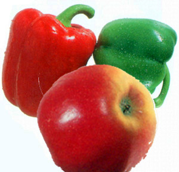
Рис. 3.28. Законченная композиция после кадрирования
сохранением (в формате JPEG) необходимо “спрессовать” все слои в один, так как раздельно хранить информацию о слоях можно только в формате PSD. “Сплющивание” изображения выполняют командой Слой > Склеить все слои (Layer > Flatten Image). После этого его можно сохранить в любом формате, в том числе и в формате JPEG.
|
|
|
|